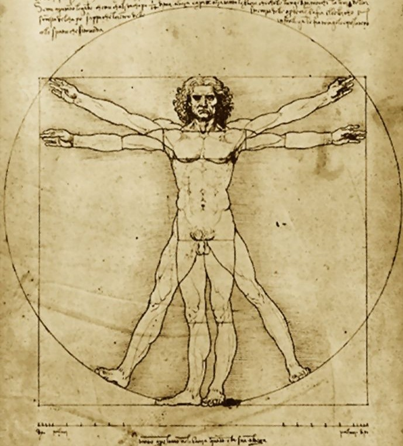

El término Antropometría se refiere al estudio de la medición del cuerpo humano en términos de las dimensiones del hueso, músculo, y adiposo (grasa) del tejido. La palabra antropometría se deriva de la palabra griega antropo, que significa ser humano y la palabra griega metron, que significa medida.
Antropometría
Que es la Antropometría Deportiva?
La antropometría deportiva es un campo de estudio que se enfoca en medir y analizar las dimensiones corporales de los atletas con el fin de mejorar su rendimiento deportivo.
El estudio antropométrico en el deporte posibilita la valoración de las características morfológicas (forma corporal, proporcionalidad, somatotipo) a lo largo de toda la temporada deportiva (Periodo Preparatorio General, Periodo Especifico y Periodo Competitivo), con el objetivo del control de factores antropométricos que limitan el rendimiento deportivo y como parte del seguimiento dietético-nutricional.
La valoración antropométrica aporta aspectos útiles y prácticos para el profesional en las ciencias de los alimentos y ciencias de la actividad física y el deporte, siendo una herramienta de consulta para la valoración y seguimiento en el ámbito deportivo. Así, es de gran utilidad para el establecimiento de pautas dietéticas y entrenamiento deportivo para la finalidad de mejora del rendimiento deportivo.

Que información obtenemos con un analisis antropometrico en Five-Group ?
Mediante un estudio de composición corporal o antropometría podemos dividir nuestro peso corporal para conocer:
- La cantidad de masa muscular
- La masa grasa
- La cantidad de agua corporal que tenemos
- La altura
- El peso
- La longitud de las extremidades
- El tamaño de las articulaciones, entre otros factores.
Este estudio Antropométrico nos es de mucha utilidad no solo en una dieta de perdida de peso, sino que en nutrición deportiva nos va a desvelar la calidad de la dieta y como el deportista se adapta tanto a sus entrenamientos como a su alimentación.
La antropometría deportiva también se utiliza para identificar los talentos deportivos potenciales y evaluar la eficacia de los programas de entrenamiento y nutrición.
Antropometría Deportiva en Five-Group
En el ámbito de las Ciencias del Deporte, es muy útil para la valoración de la condición física, el control del entrenamiento, el análisis del rendimiento energético, el estudio de los efectos de la actividad física y el deporte competitivo en la estructura y composición corporal del individuo, selección de talentos y para estudios biomecánicos.
En FIVE-GROUP podemos realizarte un estudio antropométrico que te permitirá estimar tu composición corporal, conocer tu biotipo, y conocer los progresos que realizas con tu tratamiento dietético y/o entrenamiento.
Te invitamos a ponerte en contacto con nosotros para informarte mejor sobre éste y nuestros otros servicios. ¡Muchas gracias!
Contacto